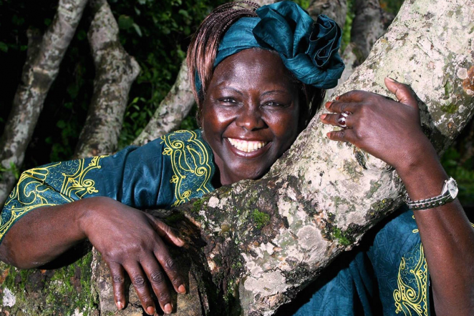

Wangarĩ Muta Maathai
A Kenyan social, environmental, and political activist who founded the Green Belt Movement.

Here's a time line of Wangari Maathai's life:
- 1940 - Born in Ihithe, Nyeri.
- 1943 - Maathai's family relocated to a White-owned farm in the Rift Valley, near the town of Nakuru.
- 1951 - Maathai moved to St. Cecilia's Intermediate Primary School.
- 1956 - Completed her studies, rated first in her class, and was granted admission to the only Catholic high school for girls in Kenya, Loreto High School in Limuru.
- 1960 - Maathai became one of some 300 Kenyans selected to study in the United States where she received her Bachelor of Science degree in Biology, with minors in Chemistry and German.
- 1964 - She studied at the University of Pittsburgh for a master's degree in Biology.
- 1966 - Maathai received her MSc in biological sciences, and was appointed to a position as research assistant to a professor of zoology at University College of Nairobi.
- 1967 - She travelled to the University of Giessen in Germany in pursuit of a doctorate. She studied both at Giessen and the University of Munich.
- 1969 - She returned to Nairobi to continue her studies at the University College of Nairobi as an assistant lecturer.
- 1971 - She became the first Eastern African woman to receive a Ph.D., her doctorate in veterinary anatomy, from the University College of Nairobi.
- 1973 - She was a member of the Nairobi branch of the Kenya Red Cross Society, becoming its director in 1973. She was a member of the Kenya Association of University Women.
- 1976 - She was sent to the first UN conference on human settlements, known as Habitat I.
- 1977 - Maathai spoke to the NCWK concerning her attendance at Habitat I. She proposed further tree planting, which the council supported.
- 1977 - On 5 June 1977, marking World Environment Day, the NCWK marched in a procession from Kenyatta International Conference Centre in downtown Nairobi to Kamukunji Park on the outskirts of the city, where they planted seven trees in honour of historical community leaders. This was the first event of the Green Belt Movement.
- 2003 - Maathai again campaigned for parliament in the 2002 elections, and won with an overwhelming 98% of the vote.
- 2004 - Wangarĩ Maathai was awarded the 2004 Nobel Peace Prize for her "contribution to sustainable development, democracy and peace.
- 2009 - Maathai was named as one of PeaceByPeace.com's first peace heroes.
- 2010 - Her book, Replenishing the Earth: Spiritual Values for Healing Ourselves and the World, she discussed the impact of the Green Belt Movement.
- 2011 - Wangarĩ Maathai died on 25 September 2011 of complications arising from ovarian cancer while receiving treatment at a Nairobi hospital.
"In a few decades, the relationship between the environment, resources, and conflict may seem almost as obvious as the connection we see today between human rights, democracy, and peace."
-- Wangari Maathai